시작 전 브리핑
이 문서의 순서는 추측이 아닙니다
레벨 순서·위험도·목표시간은 게임이 로비 UI에 쓰는 데이터테이블(DT_Levels) 원본을 그대로 읽은 것입니다. 공략 사이트마다 순서가 다른 이유는 분기가 많아서 일렬로 적으면 반드시 틀리기 때문입니다.
추격 구간이 두 개입니다. Run for your Life!(9번)와 Level !-!(21번). 두 번째 추격 다음이 호텔처럼 생긴 Level 188이고, 이걸 헷갈리는 경우가 많습니다.
코드는 외워지지 않습니다
키패드 코드와 열쇠 위치는 판마다 랜덤입니다. "코드는 4739" 같은 건 그 사람 판에서만 맞아요. 이 문서는 숫자 대신 숫자를 구하는 방법을 적습니다.
정신력이 진짜 체력입니다
시간이 지나면 서서히, 쫓기면 급격히 닳습니다. 0이 되면 죽어요. 아몬드 워터를 항상 한 병은 들고 다니세요.
출구는 다 같이 밟아야 열립니다
대부분의 레벨에서 전원이 출구에 도착해야 넘어갑니다. 한 명이 길을 잃으면 전원이 묶여요. 반대로 한 명이 엔티티를 끌고 도는 동안 나머지가 퍼즐을 푸는 식으로 쓸 수도 있습니다.
손전등은 무기이자 자살 버튼입니다
엔티티마다 빛에 대한 반응이 정반대라, 이게 이 게임에서 제일 많이 죽는 이유입니다.
버니합 — 스태미나를 무한으로
기본은 4초 달리고 4초 쉬어야 합니다. 스태미나는 달릴 때만 닳으니, 점프해서 뜬 순간 Shift를 놓으면 속도는 유지된 채 소모가 멈춥니다.
어디서 익히고 어디서 쓰나
연습은 Level 2(파이프 드림). 일직선이라 방향은 신경 안 쓰고 리듬만 잡으면 됩니다. 목표시간이 1분이니 그 안에 끝나면 성공입니다.
제일 흔한 실수는 착지하고 나서 Shift를 누르는 것입니다. 착지 순간에 눌러야 속도가 실립니다.
크라우치 점프(Space+Ctrl)도 같이 익히세요. 못 넘는 턱을 넘습니다. 써먹을 곳은 Level !, Level !-!, Level 922 계단입니다.
전체 순서 — 31단계
읽는 법
번호가 곧 진행 순서입니다. 01번부터 31번까지 이어지고, 각 레벨을 깨면 다음 번호로 자동으로 넘어갑니다. 문서 안의 모든 카드에 같은 번호가 붙어 있으니 지금 몇 번인지만 알면 어디를 봐야 할지 바로 나옵니다.
● 파란 원 은 허브에서 바로 들어갈 수 있는 지점입니다. 원 안의 숫자가 허브 문 번호예요. 처음부터 안 타도 여기로 건너뛸 수 있습니다.
▲ 보라색 은 엔딩이 나오는 지점입니다. 네 개를 다 봐야 트루 엔딩이 열립니다.
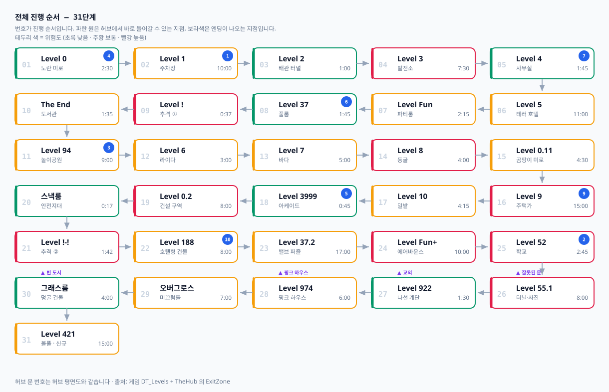
추격 복도가 두 번 나옵니다
09번 Level ! 와 21번 Level !-! 는 다른 레벨입니다. 21번이 09번의 서브레벨이라 비슷하게 생겼어요.
두 번째 추격(21번) 다음에 나오는 호텔처럼 생긴 건물은 22번 Level 188 입니다. 06번 테러 호텔과 헷갈리기 쉬운데 완전히 다른 곳이에요.
20번 스낵룸에서 보급을 채우세요
위험도 0의 완전 안전지대입니다. 그런데 바로 다음 21번이 위험도 5 예요. 여기서 아몬드 워터와 에너지바를 최대한 챙기고 나가세요.
안전한 곳은 여기 말고 05번 사무실과 18번 아케이드 정도입니다.
01 · Level 0
노란 벽지 미로 — 튜토리얼이지만 방심하면 죽습니다
- 시작 지점 주변에서 사다리 조각을 모읍니다. 다 모으면 조립 상호작용이 뜹니다.
- 사다리를 고쳐 환풍구로 올라가 탈출 열쇠를 챙깁니다.
- 열쇠로 나무문을 열면 바닥에 구멍이 뚫린 방. 좁은 들보를 따라 건너세요.
- 떨어져도 끝이 아닙니다. 아래 기둥의 화살표를 따라가면 비밀문이 있습니다.
박테리아: 한 곳에 3분 이상 머물면 스폰됩니다. 여기선 스태미나가 무한이니 계속 뛰세요.
Level 0 is a non-linear space, resembling the back rooms of a retail outlet. All rooms appear uniform — yellowed wallpaper, damp carpet, inconsistently placed fluorescent lighting. However, no two rooms within the Level are identical.
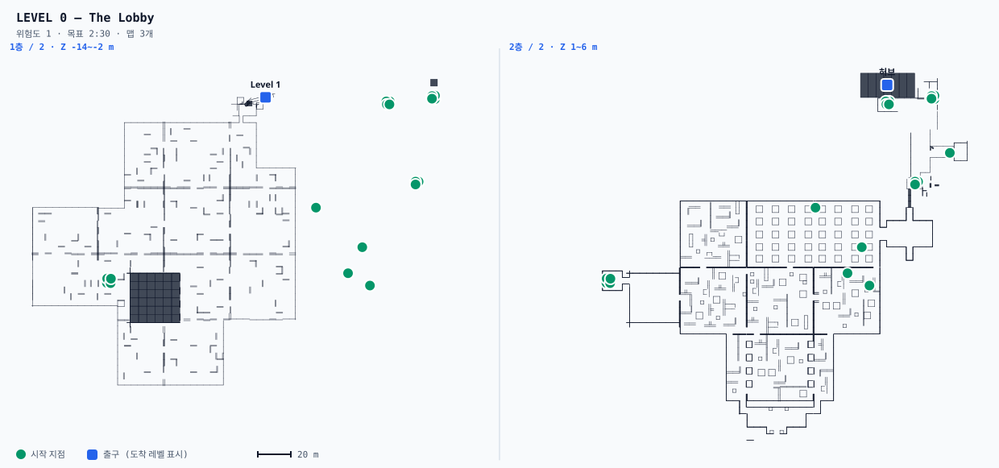
02 · Level 1
주차장 — 코드, 열쇠 4개, 퓨즈
- 엘리베이터 코드 — 주차장의 색깔별 차 대수를 세면 그게 코드입니다. 판마다 다릅니다.
- 열쇠 4개 — 내려가서 사무실과 벽장을 뒤집니다.
- 금고 문 — 열쇠 4개를 동시에 꽂아야 합니다. 협동이면 카운트를 세세요.
- 퓨즈 박스 9개 — 어두운 지하에서. 손전등을 켜고 다니세요.
스킨 스틸러는 문을 못 엽니다. 방에 들어가 문을 닫으면 안전합니다.
여기 M.E.G. 문으로 Level 922(교외 엔딩)가 갈라집니다. 게임 파일에 Maps/Garage/922Path로 확인됩니다.
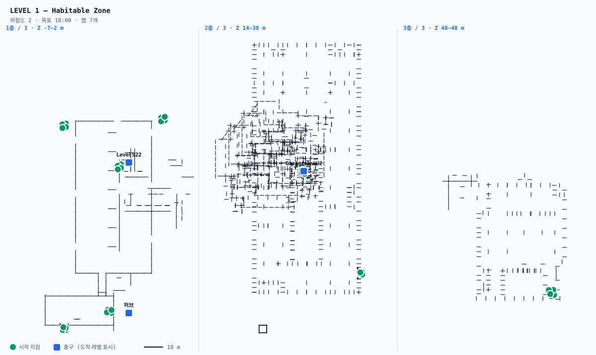
03 · Level 2
일직선 터널 — 퍼즐이 아니라 반응속도
갈림길이 거의 없어 헤맬 일은 없는데 증기가 주기적으로 뿜어져 나옵니다. 분출 간격을 한 번 보고 지나가세요.
버니합 연습에 최적입니다. 목표시간 60초 안에 끊기지 않고 통과하면 익힌 겁니다.
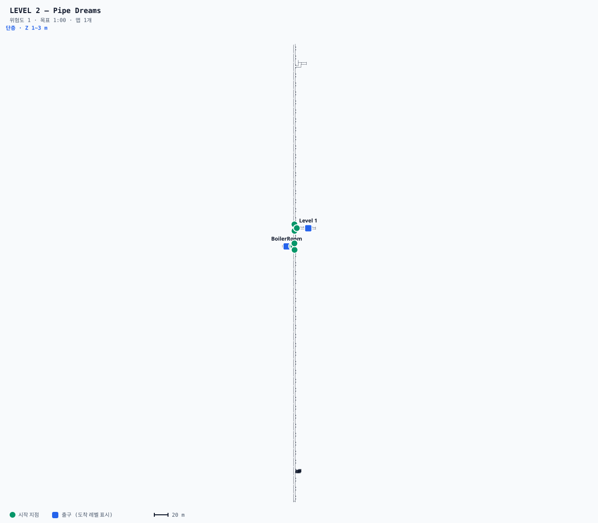
04 · Level 3
퓨즈 9개 — 세 구역에 3개씩
- 손전등을 정면에 비추면 하운드가 잠깐 굳습니다. 이 틈에 도망치세요.
- 방에 들어가기 전 멈춰서 소리를 들으세요. 발소리로 안에 있는지 압니다.
- 어두운 통로는 되도록 우회합니다.
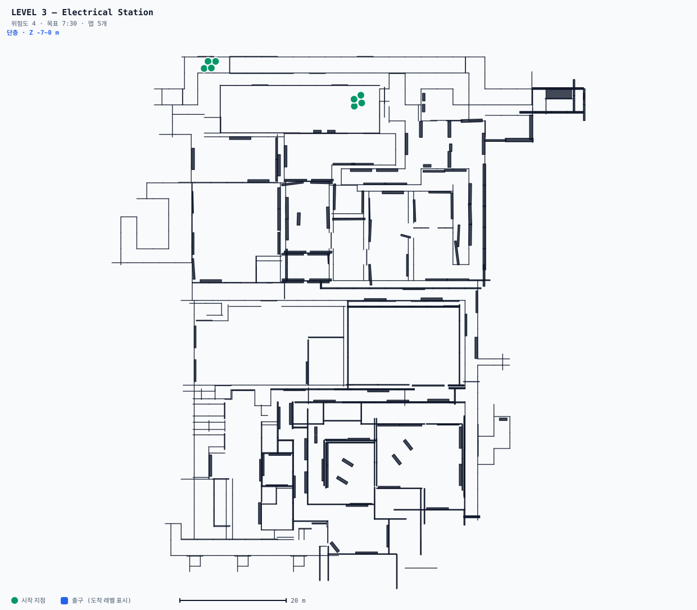
05 · Level 4
세는 퍼즐 — 이 게임에서 가장 안전한 구간
정수기·책·의자·책상을 각각 세어 자판기에 입력합니다. 개수는 판마다 다릅니다. 협동이면 사람마다 하나씩 맡는 게 빠릅니다.
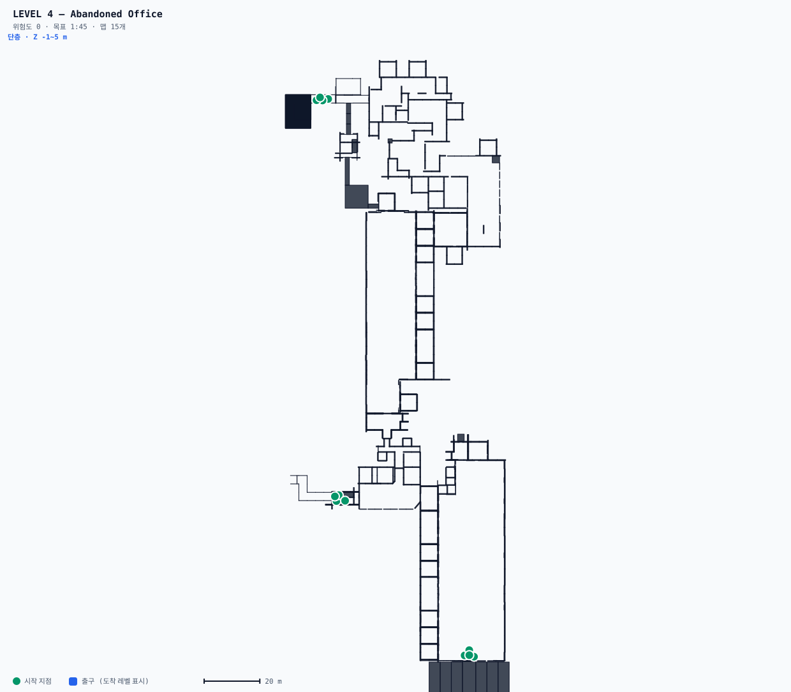
06 · Level 5
로비 → 객실 → 크롤스페이스 → 보일러실
- 로비 — 초상화 퍼즐. 그림 속 인물을 나이순으로 배열합니다.
- 객실 — 글자 모으기. 열린 우편함을 뒤져 글자를 모으고 메인 우편함에서 조합합니다.
- 크롤스페이스 — 열 감지 미로. 온도계를 보며 기어서 모션 센서를 피합니다.
- 보일러실 — 기계 미로를 통과하면 끝.
데스모스는 암수를 구분하세요. 암컷은 빛에 반응하니 손전등을 끄고 앉아서 지나갑니다. 수컷에 살충제를 뿌리면 모스 젤리가 나옵니다 — 스태미나와 속도를 같이 올려주는 이 구간 최고의 소모품입니다.
Level 5 is a hotel complex with many rooms and halls, seemingly constructed in the 1930s with furniture dating back to the 1920s.
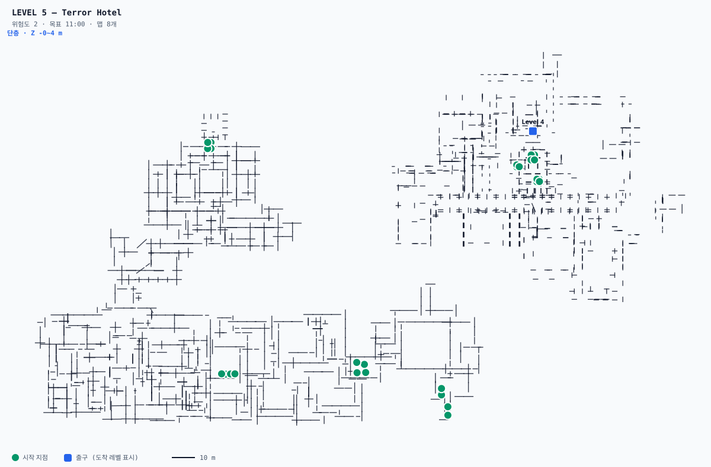
07 · Level Fun
순수 잠입 — 싸울 방법이 없습니다
- 계속 앉아서 다니세요. 서서 걷는 순간 발각됩니다.
- 파티고어는 정해진 순찰 경로를 돕니다. 등을 보일 때 움직이세요.
- 하얀 파티 테이블 밑이 안전지대입니다. 들켰으면 제일 가까운 테이블로 뛰어드세요.
- 오른쪽 벽을 타면 출구로 이어집니다.
M.E.G. Notice: information has been removed as it was vandalized by the Partygoers.
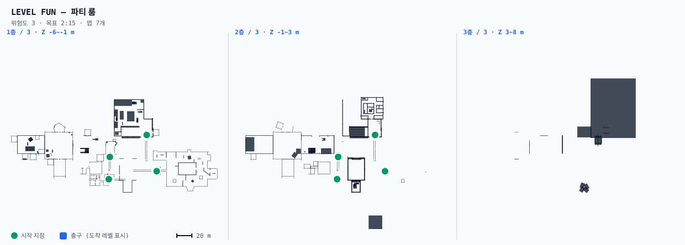
08 · Level 37
물에 들어가면 죽습니다
제일 예뻐 보이는 게 함정입니다. 박테리아가 있는 물에 빠지면 즉사에 가깝습니다. 수면 아래가 안 보이니 아무 데나 뛰어들지 마세요.
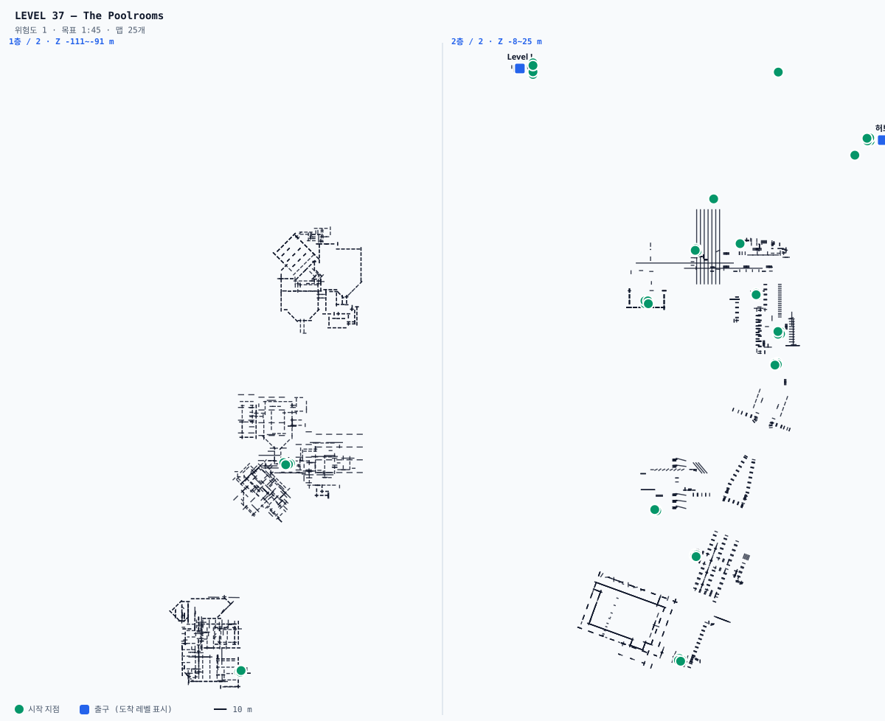
09 · Level !
퍼즐 없음. 그냥 달리기입니다
빨간 병원 복도를 멈추지 않고 끝까지 달립니다. 목표시간 37초로 게임에서 가장 짧은 레벨입니다.
- 절대 멈추지 마세요. 뒤돌아보는 것도 손해입니다.
- 침대 같은 장애물은 지그재그로 피합니다.
- 에너지바를 미리 먹고 들어가세요. 버니합이 여기서 제일 크게 작용합니다.
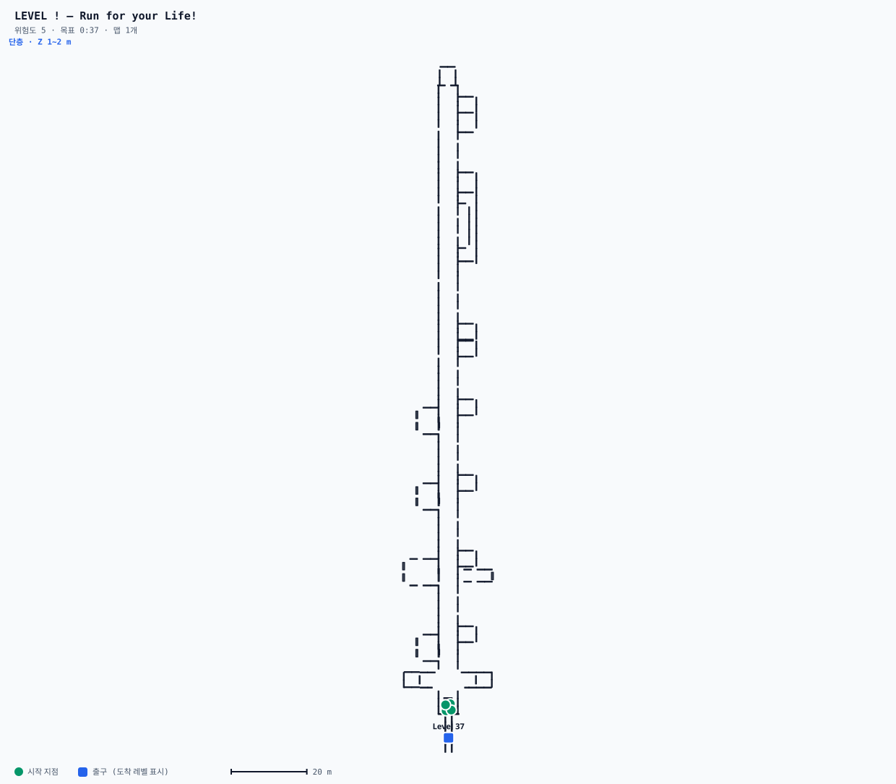
10 · The End
테이프 24개 — 소리를 내면 죽습니다
스크래처는 맹인이지만 청각이 극도로 예민하고 당신보다 빠릅니다. 들키면 도망칠 수 없습니다.
- 책장의 테이프를 모읍니다. 솔로 24개, 협동이면 줄어듭니다.
- 내내 앉아서 걸으세요. 뛰면 즉시 감지됩니다.
- 막히면 화재경보기로 유인합니다. 자주 쓰면 안 통합니다.
- 다 모으면 컴퓨터 단말기를 조작합니다.
The End creates the illusion of escaping The Backrooms — a modern library with the main area in the center.
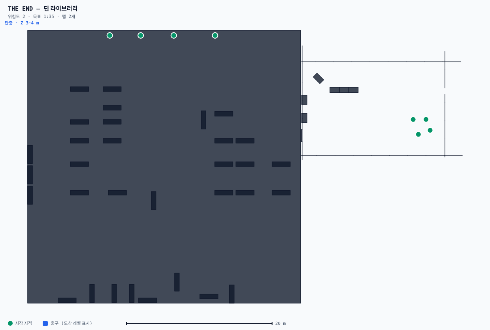
11 · Level 94
낮과 밤 — 놀이공원과 떠 있는 성
마을·떠 있는 성·언덕이 필름 그레인 효과와 함께 나옵니다. 낮/밤 주기가 있고 밴을 이용합니다. 성 안의 광대 롤러코스터 퍼즐이 관문입니다.
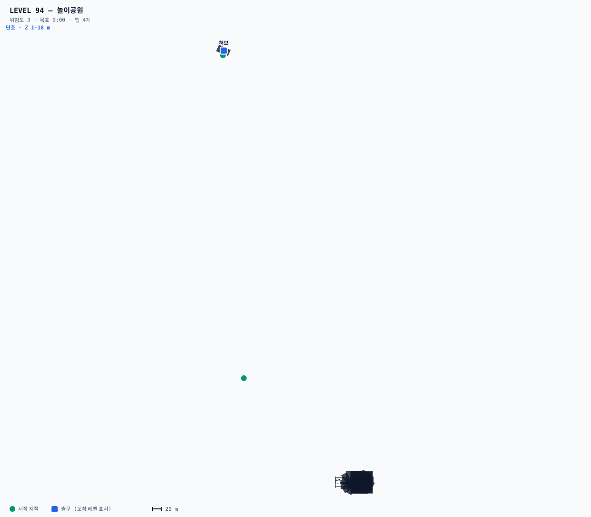
12 · Level 6
라이다로 벽을 더듬는 구간
완전한 어둠에서 라이다 스캐너로 벽을 스캔하며 나아갑니다. 렛치는 소리로 찾으니 앉아서 이동하세요. 오른쪽 벽을 계속 타면 길이 풀립니다.
여기 M.E.G. 문에서 Level 974(핑크 하우스 엔딩)가 갈라집니다.
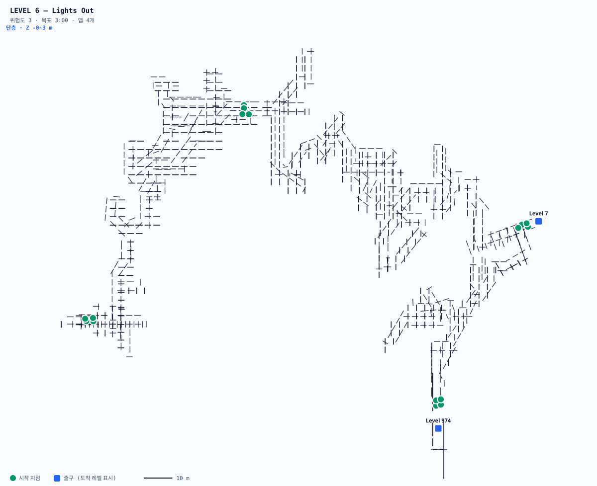
13 · Level 7
끝없는 바다 — 등대를 찾으세요
사방으로 무한한 바다입니다. 등대를 기준으로 방향을 잡고, 마지막에 수중 동굴로 잠수합니다.
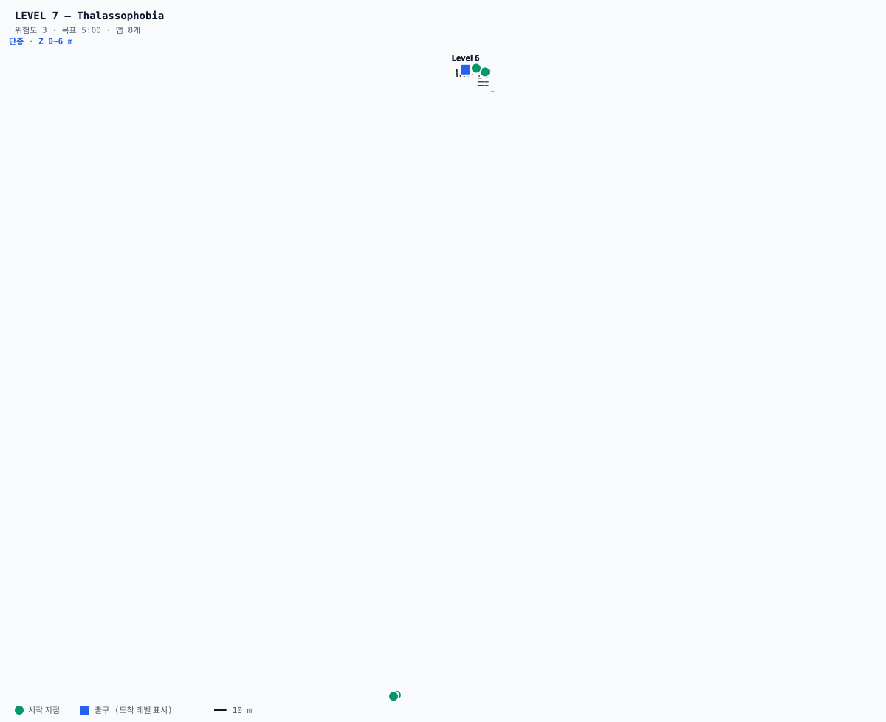
14 · Level 8
동굴 — 위험도 5
거대 동굴과 좁은 갱도가 얽혀 있습니다. 흔들다리가 관문입니다. 데스모스와 스킨 스틸러가 같이 나오니 손전등 판단이 특히 중요합니다.
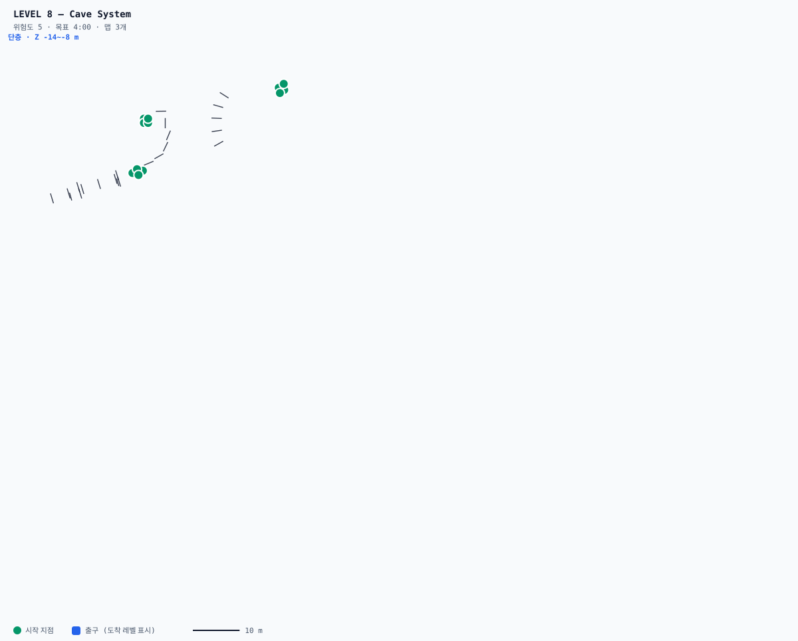
15 · Level 0.11
썩어가는 Level 0
Level 0의 변종. 노란 복도가 병든 갈색으로 얼룩지고 곰팡이로 덮여 있습니다. 구조는 비슷하지만 시야가 훨씬 나쁩니다.
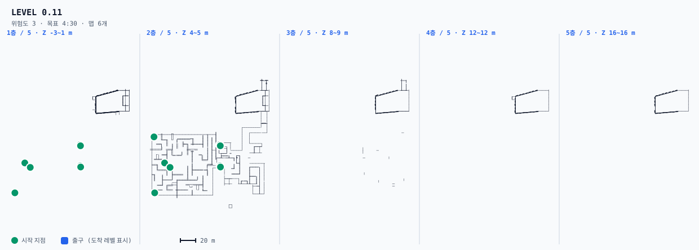
16 · Level 9
야간 주택가 — 게임에서 가장 긴 레벨
게임 파일상 집 25채가 개별 제작돼 있습니다. 컴퓨터 퍼즐을 풀고 출입 배지를 얻어야 연구소를 나갑니다.
Level 9 is a suburban area at night. There have been reports of an outbreak in the M.E.G. base located here.
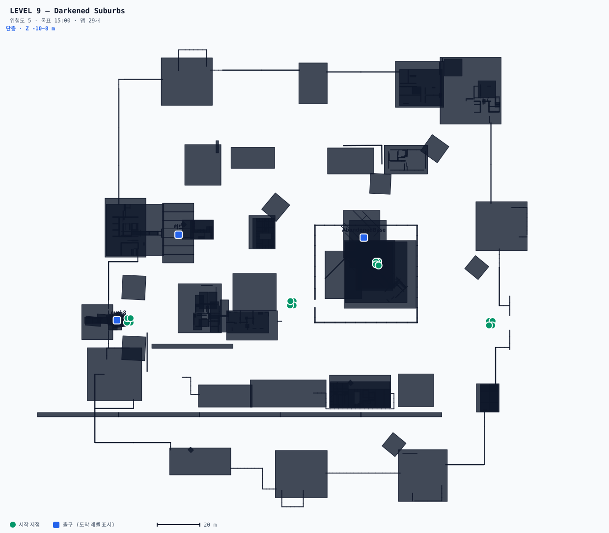
17 · Level 10
끝없는 밀밭
안개 낀 밀밭이 사방으로 이어집니다. 게임 파일상 여기서 Level 3999로 연결됩니다(Maps/Level10/Level3999_Exterior).
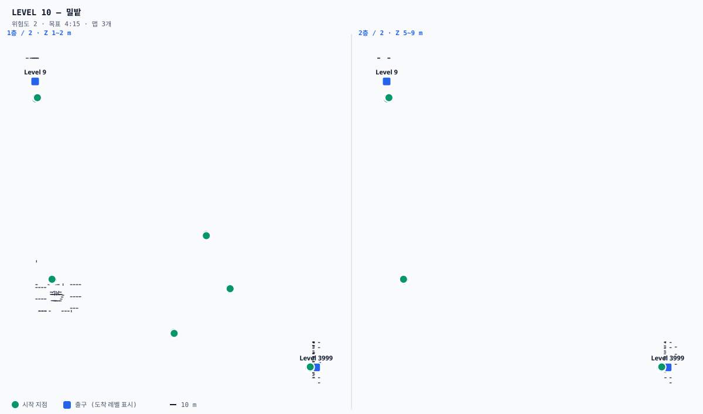
18 · Level 3999
아케이드 허브 — 엔딩 추적실
무한 아케이드. M.E.G. 베이스 엘리베이터에서 잠긴 문을 열면 엔딩 추적실이 있고, 아케이드 기계가 획득한 엔딩을 표시합니다. 분기 엔딩 4개를 모두 본 뒤 여기서 트루 엔딩이 열립니다.
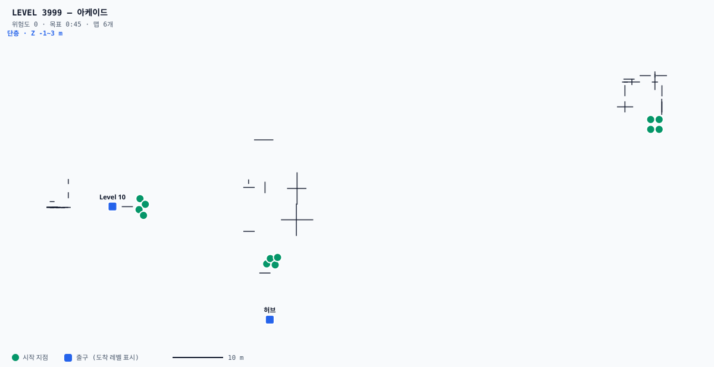
19 · Level 0.2
건설 중인 M.E.G. 문명
Level 0의 서브레벨. 일부는 안전하지만 노클립 위험이 상존합니다. 차단기 5쌍을 활성화해 통과합니다.
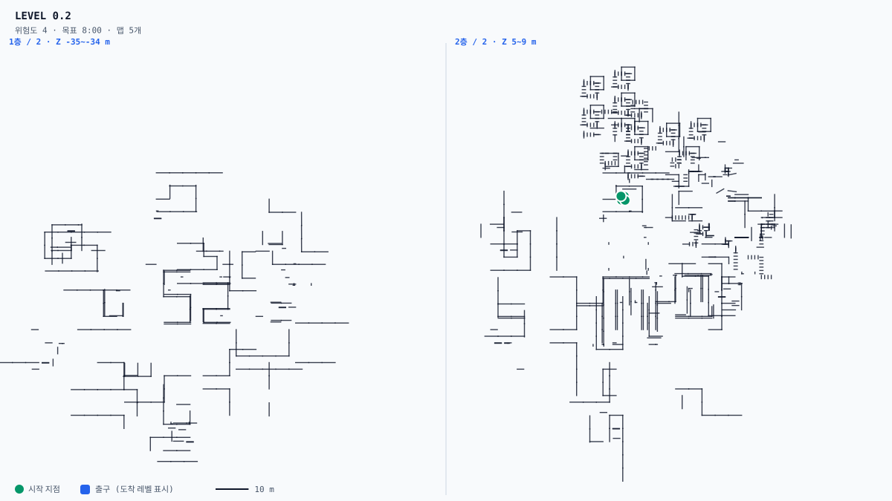
20 · 스낵룸
완전 안전지대 — 여기서 보급을 채우세요
1900년대 초 바 형태의 완전히 안전한 레벨입니다. 보급품이 많아요.
아몬드 워터와 에너지바를 최대한 채우고 나가세요. 바로 다음이 위험도 5인 두 번째 추격 구간입니다.
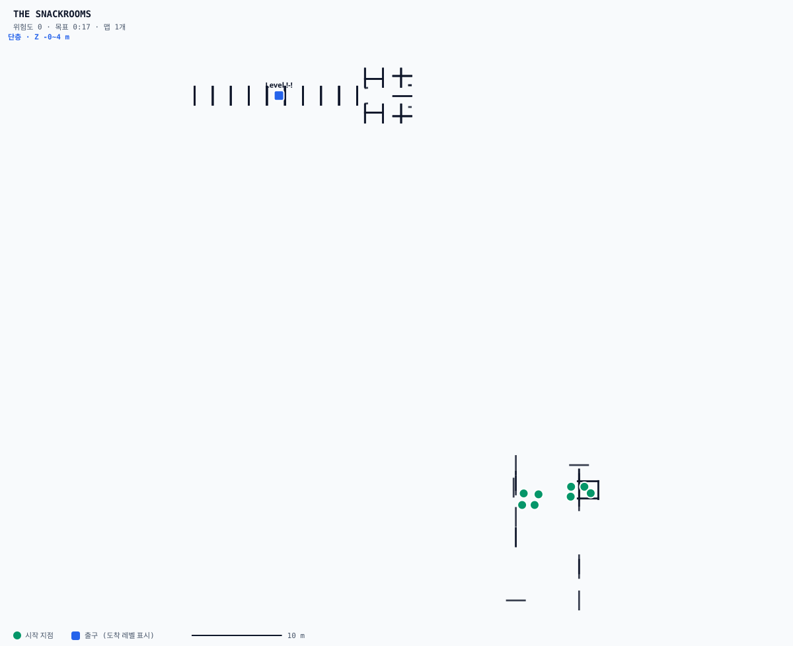
21 · Level !-!
추격 복도가 두 번 나옵니다
9번 Run for your Life!와 21번 Level !-!는 다른 레벨입니다. 21번이 9번의 서브레벨이라 비슷하게 생겼어요. 두 번째 추격 다음에 나오는 호텔 같은 건물이 Level 188입니다.
좁은 복도 + 파란 안전구역 + 전기톱
Level ! 의 서브레벨입니다. 복도가 훨씬 좁은 대신 파란 벽으로 표시된 안전구역이 중간중간 있습니다.
- 첫 파란 안전구역에서 전기톱을 챙깁니다.
- 즉시 돌아서 문을 톱으로 뚫고 클럼프를 따돌립니다.
- 파란 구덩이로 내려가며 추격 단계를 넘깁니다.
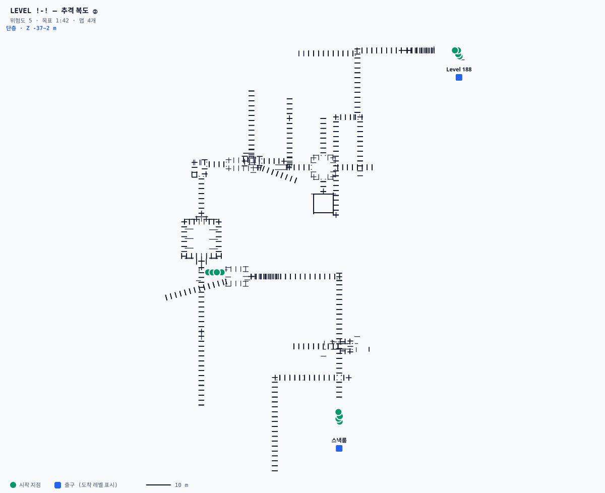
22 · Level 188
호텔처럼 생긴 그 건물이 여깁니다
게임 파일 구조가 그대로 설명해 줍니다 — Lobby · Floor3 · Floor4 · LaundryRoom · Courtyard · ElectricalRoom. 로비와 층, 세탁실이 있는 호텔형 복합건물입니다.
- 화물 엘리베이터로 TV를 옮기는 것이 주 퍼즐입니다.
- 천장 거미는 위를 보고 확인하세요. 커튼 유령은 커튼 근처에서 조심.
Level 188 is a large complex of interior spaces with a courtyard containing many windows, some with open curtains showing views of what appears to be outside.
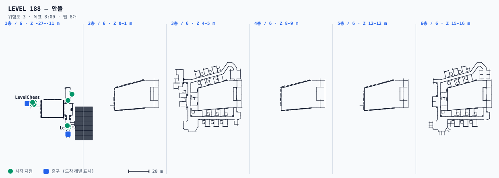
23 · Level 37.2
밸브 퍼즐 5단계 — 게임에서 두 번째로 긴 구간
| 구간 | 목표 | 위험 |
|---|---|---|
| 풀룸 1 | 뗏목 조작 · 수위 올리기 | 물속 박테리아 |
| 고인 물 1 | 밸브 4개 · 탱크 채우기 | 클럼프 순찰 |
| 풀룸 2 | 밸브 8개 · 부서진 다리 | 시간제한 |
| 고인 물 2 | 밸브 3개 · 배수 | 기생충 · 점프 구간 |
| 고인 물 3 | 밸브 7개 | 넓은 구역 순찰 |
협동으로 밸브를 나눠 도는 게 사실상 필수입니다.
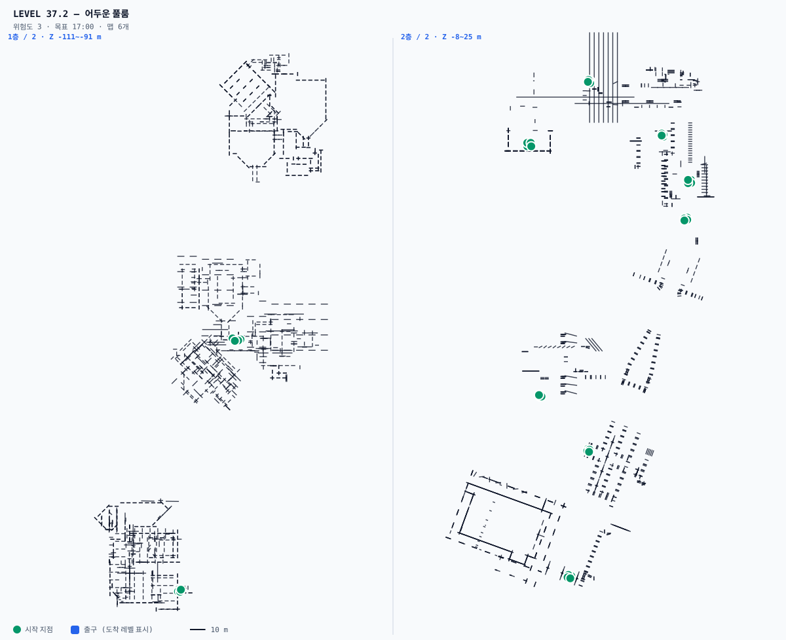
24 · Level Fun+
Level Fun의 심층 버전
슬라이드·트램폴린이 있는 에어바운스 놀이 공간. 열쇠 위치가 랜덤이고 야광봉으로 어두운 방을 탐색합니다. 대응은 Level Fun과 동일 — 앉아서, 테이블 밑으로.
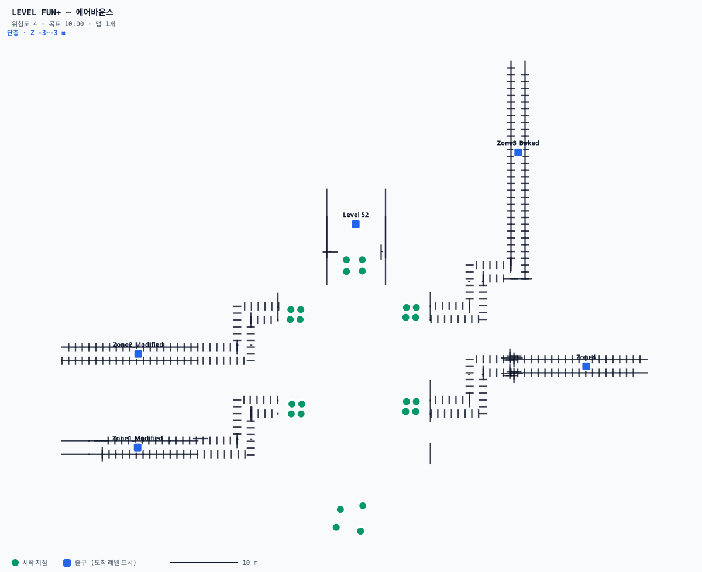
25 · Level 52
복도·급식실·교실
NPC 동행이 붙습니다. 이 구간의 파티고어는 공격성이 강화돼 있으니 Level Fun처럼 여유 부리면 안 됩니다.
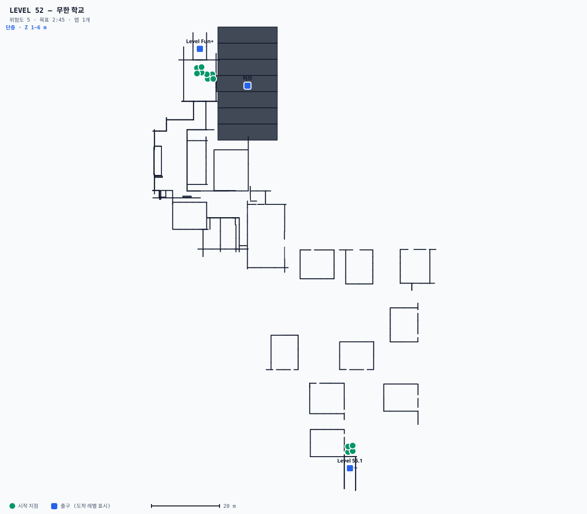
26 · Level 55.1
사진을 찍어야 진행됩니다
거대한 방 안에 여러 서브레벨로 통하는 터널이 있습니다. 세 개 층에 걸친 사진 촬영 목표를 완료하면 잘못된 문 엔딩에 도달합니다.
도망만 다녀서는 진행이 안 됩니다. 엔티티를 카메라로 찍어야 해요.
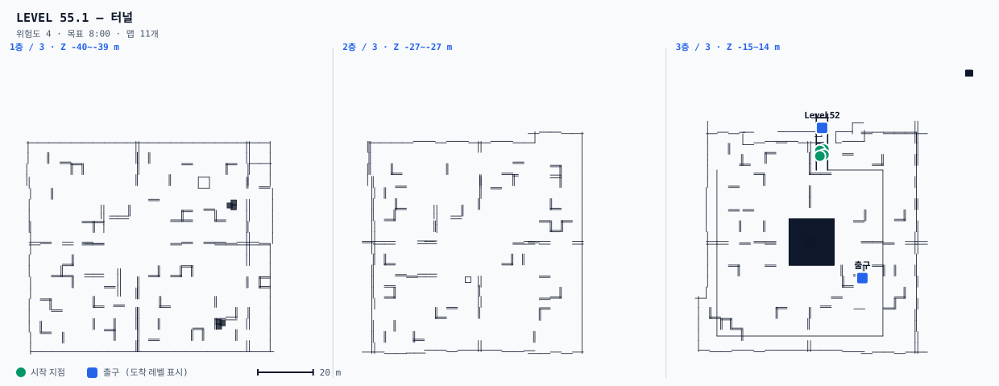
27 · Level 922
이 넷은 순서가 없습니다
게임 데이터상 어느 레벨도 이들로 이어지지 않습니다. M.E.G. 문이나 허브에서 직접 진입하는 구조라, 아무 때나 가도 됩니다. 그리고 넷을 다 봐야 트루 엔딩이 열립니다.
교외 엔딩
정식 명칭 Level 9223372036854775807(int64 최대값). Level 1(주차장)의 M.E.G. 문으로 진입합니다 — 게임 파일 Maps/Garage/922Path로 확인됩니다.
94층 이상 오른 뒤 계단 아래로 뛰어내리면 트리거됩니다. 순수 노가다라 프레임 제한 편법이 알려져 있습니다.
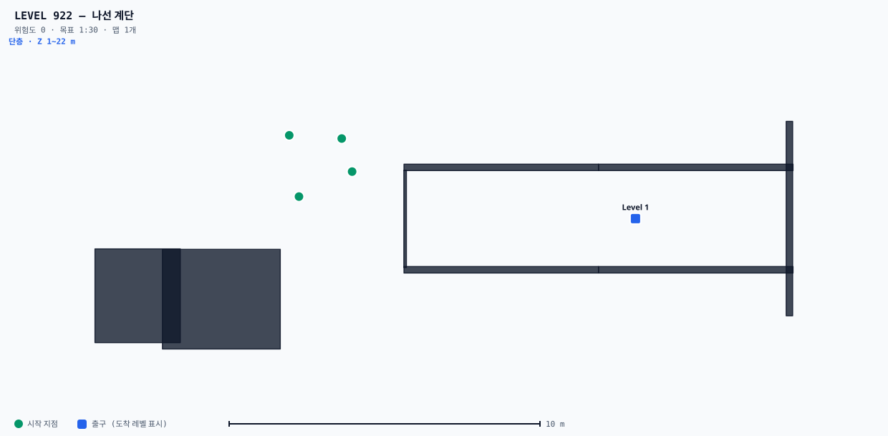
28 · Level 974
키티와 테디베어 12개
내부가 온통 분홍색인 큰 저택. Level 6(라이다 구간)의 M.E.G. 문을 ID 카드로 열고 진입합니다. 어두운 미로에서 테디베어 12개를 모읍니다.
Level 974 contains an entity that has been reported to help explorers if it likes them.
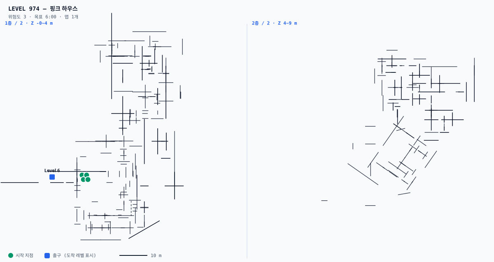
29 · 오버그로스
그래피티 낙서 + 미끄럼틀 — 이게 오버그로스입니다
한 줄 요약 — 그래피티가 칠해진 Level 0 변종이고, 미끄럼틀을 타고 내려가는 레벨입니다. 내부 이름이 GraffitiLevel인 이유죠.
맵 데이터에서 확인한 실제 구성입니다:
- 데스 슬라이드 8개 — 이 레벨의 정체입니다. 미끄럼틀을 타고 내려가는데 중간에 게이트 3개가 있어 열어가며 진행합니다. 표시등이 어느 게이트가 열렸는지 알려줍니다.
- 숨는 벽 18개 — 박테리아가 지나갈 때 몸을 숨기는 곳입니다. 위치를 미리 봐두세요.
- 배회하는 박테리아 5마리 + 스폰 포인트 11곳. Level 0에서 만난 그놈이 여기선 상시 돌아다닙니다.
- 본시프(Bonethief) — 슬라이드 구간 전용 엔티티입니다. 뼈 무더기가 보이면 근처에 있다는 뜻입니다.
- NPC 4명을 들어서 옮겨야 합니다. 내려놓는 지점이 4곳 정해져 있어요. 협동이면 나눠 드는 게 훨씬 빠릅니다.
- 환풍기 4개, 아이템 스포너 9곳, 안개 구간.
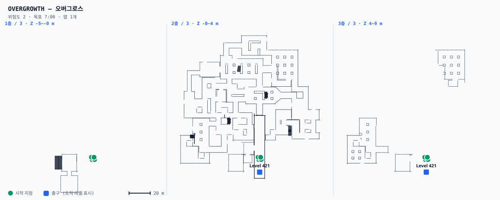
30 · 그래스룸
덩굴 건물을 11층까지 — 빈 도시 엔딩 지점
한 줄 요약 — 풀과 덩굴로 덮인 실내 건물을 층층이 올라가 11층에서 탈출하는 레벨입니다. 여기가 빈 도시 엔딩 지점입니다.
맵 데이터에서 확인한 실제 구성입니다:
- 버튼 스탠드 8개 + 표시등 8개. 앞서 "버튼 4개"라고 적었는데 실제로는 8개였습니다. 표시등이 눌린 버튼을 보여주니 그걸 보고 남은 걸 찾으세요.
- 레버 3개 — 바닥 레버 2개와 일반 레버 1개.
- 덩굴 비활성 구역 9곳 — 덩굴이 길을 막고 있다가 풀리는 구간입니다. 버튼·레버가 이걸 여는 장치예요.
- 나이프 · 로프 · 무전기가 각각 4개씩 배치돼 있습니다. 4인 협동을 전제로 설계됐다는 뜻입니다. 솔로도 되지만 왕복이 많아집니다.
- 로프 구간 3곳, 무너지는 판자 3개, 깨지는 유리 바닥 1곳 — 발밑을 조심해야 하는 레벨입니다.
- 엘리베이터 1대 + 건설용 리프트 2대로 층을 올라갑니다. 목표는
BP_Level11_Exit— 11층 출구가 맞습니다. - 쪽지 2개가 있습니다. 스토리를 따라가려면 챙기세요.
진입은 Level 55.1 터널에서 갈라집니다(Maps/Tunnel/GrassRooms_New). Level 421을 하면 오버그로스를 거쳐 여기로 자동으로 이어집니다.
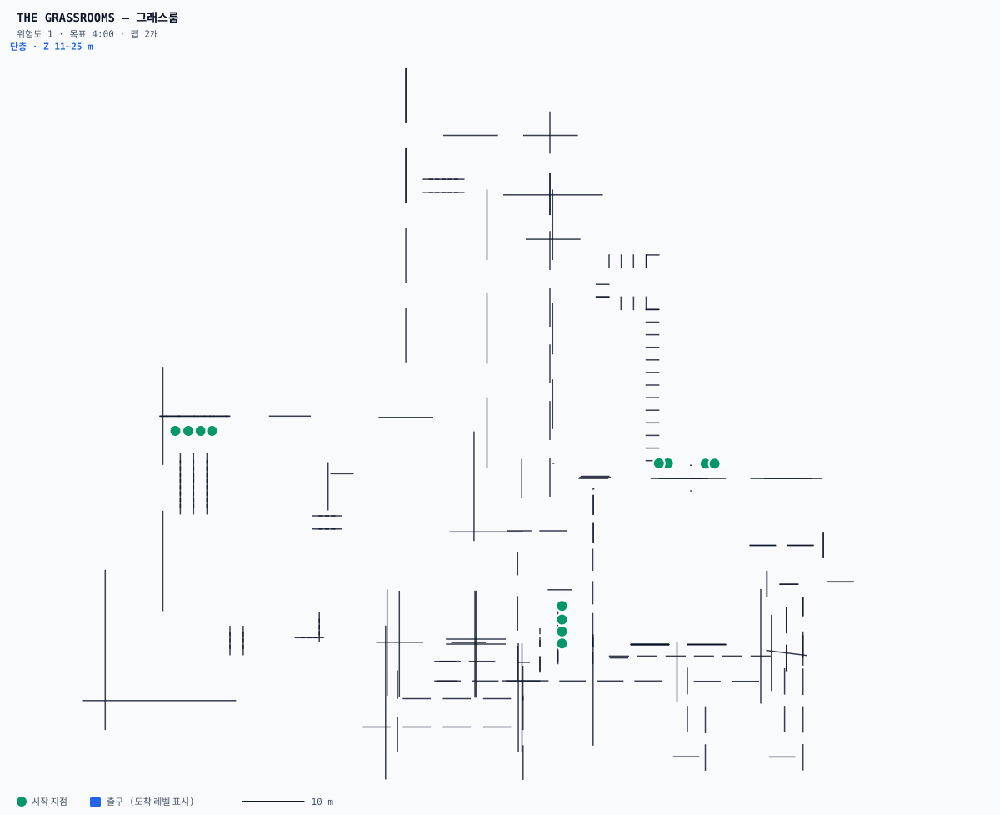
허브 — 어디서 시작할지 고르는 곳
이 게임은 일직선이 아닙니다
공략 사이트마다 레벨 순서가 다른 진짜 이유가 이겁니다. 허브(Maps/TheHub)에 레벨로 통하는 문이 10개 있고, 각 문이 캠페인의 서로 다른 지점으로 넣어줍니다. 한 줄로 적으면 반드시 틀려요.
추측이 아닙니다. 허브 맵의 BP_ExitZone 액터 10개가 각각 목적지 레벨 이름을 속성으로 들고 있어서, 그걸 그대로 읽었습니다. 아래 평면도의 번호가 그 문들입니다.
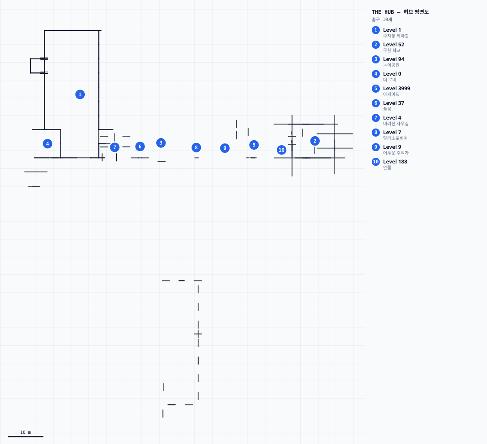
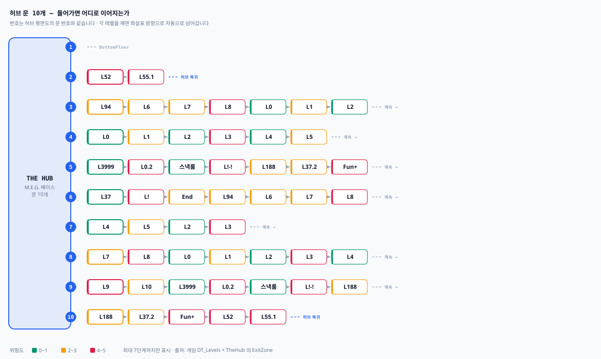
9번 문으로 들어가면
Level 9(주택가) → Level 10(밀밭) → Level 3999(아케이드) → Level 0.2 → 스낵룸 → Level !-! → Level 188 순으로 계속 이어집니다. 한 레벨을 깨면 다음이 자동으로 열리는 구조예요.
거기서 더 가면 Level 37.2 → Fun+ → Level 52 → Level 55.1 을 거쳐 허브로 돌아옵니다. 문 하나로 11개 레벨짜리 코스가 열리는 셈입니다.
허브 진입 레벨 7개
| 진입 레벨 | 위험도 | 목표시간 | 갈래 길이 | 끝나면 | 얻는 것 |
|---|---|---|---|---|---|
| Level 0 | 1 | 2:30 | 6개 | Pipes 경유 · Level 2 맵으로 순환 | 메인 캠페인 시작 |
| Level Fun | 3 | 2:15 | 8개 | Level 0 으로 | — |
| Level 0.11 | 3 | 4:30 | 1개 | Level 8 로 합류 | — |
| Level 9 | 5 | 15:00 | 11개 | 허브 복귀 | 가장 긴 갈래 |
| Level 922 | 0 | 1:30 | 1개 | Level 94 로 합류 | 교외 엔딩 |
| Level 974 | 3 | 6:00 | 1개 | 허브 복귀 | 핑크 하우스 엔딩 |
| Level 421 | 2 | 15:00 | 3개 | 허브 복귀 | ID 카드 필요 · 빈 도시 엔딩 |
갈래 세 종류
- 허브로 돌아오는 갈래 — Level 9 · 974 · 421. 끝까지 가면 M.E.G. 베이스로 복귀합니다. 한 번에 끝낼 수 있는 완결된 코스예요.
- 다른 갈래로 합류하는 갈래 — Level Fun · 0.11 · 922. 진행하다 보면 다른 줄기에 섞여 들어갑니다.
- 순환하는 갈래 — Level 0 부터 5까지 가면 Pipes 통로를 거쳐 Level 2 맵으로 되돌아갑니다. 메인 캠페인이 닫힌 고리 구조입니다.
지금 뭘 할지 정하는 기준
- 처음이면 Level 0. 튜토리얼 겸 메인 캠페인입니다.
- 짧게 한 판 — Level 922(1분 30초, 위험도 0)나 Level 974(6분). 둘 다 엔딩이 딸려 옵니다.
- 길게 각 잡고 — Level 9. 11개 레벨을 지나 허브로 돌아오는 가장 긴 코스입니다. 중간 스낵룸에서 보급을 채우세요.
- 신규 컨텐츠 — Level 421. 메인 스토리를 끝내 ID 카드를 얻어야 갈 수 있습니다. Level 1 최하층 M.E.G. 문 → 벙커 → 볼풀 순서입니다.
- 트루 엔딩 노리면 — 922 · 974 · 421(그래스룸 경유) · 55.1 네 갈래를 다 돌고 Level 3999로.
31 · Level 421
어디서 출발하나 — 결론부터
선행 조건이 있습니다. 메인 스토리를 먼저 끝내야 해요. 세 단계입니다.
- 메인 스토리 클리어 → ID 카드 획득. Level 0부터 Level 55.1(터널)까지 정상 루트로 진행합니다. 55.1을 탈출하면 잘못된 문(Wrong Door) 엔딩이 재생되고 ID 카드를 얻습니다. 게임 데이터에서도 55.1의 목적지가
Bunker로 잡혀 있습니다. - Level 1 주차장으로 돌아가 M.E.G. 문 열기. 주차장 최하층에 M.E.G. 문 + 카드 스캐너 + 벙커 문이 나란히 있습니다. ID 카드로 스캐너를 통과하면 확장된 M.E.G. 벙커가 열립니다.
- 벙커 안에서 421 입구로. 벙커에는 벙커 문 5개, 카드 스캐너 2개, 전용 엘리베이터, 그리고 볼풀 1개가 있습니다. 그 볼풀이 Level 421로 넘어가는 지점입니다.
파일로 확인한 근거 — Maps/Garage/BottomFloor에 BP_MEGDoor · BP_CardScanner · BP_BunkerDoor가 각 1개씩 같이 있습니다. Maps/Bunker에는 카드 스캐너 2 · 벙커 문 5 · BP_BallPit_Square 1개와 LP_LevelPlasticMariana 참조가 있습니다.
층수만 확인이 안 됩니다. "4층"으로 알려져 있는데 게임 파일의 주차장 맵은 TopFloor · MiddleFloor · BottomFloor 셋뿐이고, 장치는 BottomFloor에 있습니다. 게임 내 표기와 파일 이름이 다를 수 있으니 최하층부터 찾아보세요.
나가는 길은 정해져 있습니다: 421 → 오버그로스 → 그래스룸 → M.E.G. 베이스. 그래서 이 코스 자체가 빈 도시 엔딩으로 이어집니다 — 신규 레벨 즐기면서 엔딩 하나 따는 셈입니다.
세 구역으로 나뉩니다
- M.E.G. 전초기지 (Entrance) — 버려진 전초기지. 어두운 복도를 스크래처를 피해 통과합니다. The End에서 쓰던 요령 그대로 — 뛰지 말고 앉아서.
- 브루스 디스커버리 센터 (ChildrensHospital) — 상어 마스코트 브루스가 있는 거대 어린이병원. 여기가 본편이고 미로 구조입니다.
- 플라스틱 마리아나 (EndlessOceanBallPit) — 노클립으로 떨어지는 끝없는 볼풀. 상어 개체의 영역입니다.
Level 421 is known for the Plastic Mariana, hidden somewhere deep down. The maze of hallways holds the secrets to unlocking the trench below.
공식 설명이 핵심을 말해줍니다 — 복도 미로를 풀어야 아래 해구가 열립니다. 병원에서 헤매는 게 이 레벨의 본체고, 볼풀은 그 다음입니다.
상어
게임 파일에 Blueprints/Entity/L_SharkDeathScare가 있습니다 — 전용 사망 연출이 있는 개체라는 뜻입니다. 볼풀 구간에서 잡히면 그걸로 끝입니다.
입구 구역에서 나올 것들(L_PM_Entrance_Gameplay 기준): 볼풀 14개와 볼풀 이동 스플라인 — 볼풀을 타고 흘러가는 구간이 있다는 뜻입니다. 카드 스캐너 3개, 벙커 문 3개, 그리고 색깔 퍼즐 문 1개가 있습니다.
이 레벨은 나온 지 며칠 안 돼서 세부 공략이 아직 정립되지 않았습니다. 위 내용은 게임 파일 구조와 공식 설명에서 확인한 것까지입니다. 직접 해보시고 알려주시면 채워 넣겠습니다.
평면도
이 지도는 어디서 왔나
게임의 .pak에서 레벨 맵을 꺼내 액터 좌표를 위에서 내려다본 것입니다. 스크린샷이나 손으로 그린 게 아니라 실제 배치 데이터예요.
벽만 그렸습니다. 가구·소품·조명·바닥·천장은 전부 뺐어요. 그것들까지 찍으면 벽이 묻혀서 지도로 안 읽힙니다.
메시 이름에 길이가 들어있어서(SM_Wall_4m = 4 m) 점이 아니라 실제 길이와 방향을 가진 선분으로 그렸습니다. 회전값은 컴포넌트 로테이션에서, 인스턴스 벽은 변환 행렬에서 뽑았습니다.
층이 있는 레벨은 층별로 나눠 그렸습니다. 전부 한 평면에 겹쳐 찍으면 3층과 4층이 뒤엉켜 못 읽거든요. 벽의 높이(Z)를 묶어 층을 가르고, 패널을 나란히 놓았습니다.
시작 지점과 출구도 표시했습니다. ● 초록이 스폰 지점(PlayerStart), ■ 파랑이 출구입니다. 출구에는 어느 레벨로 나가는지 이름을 붙였습니다.
단, 모듈형 벽 키트로 지은 레벨에서만 잘 나옵니다. 아케이드나 볼풀처럼 통짜 아트 메시로 만든 레벨은 이름에 wall이 안 붙어서 걸러낼 수가 없어 뺐습니다.
부록
전체 레벨 표 — 게임 데이터 원본
| 진행 | 레벨 | 위험도 | 목표시간 | XP | 비고 |
|---|---|---|---|---|---|
| 01 | Level 0 | 1 | 2:30 | 50 | |
| 02 | Habitable Zone | 2 | 10:00 | 200 | |
| 03 | Pipe Dreams | 1 | 1:00 | 50 | |
| 04 | Electrical Station | 4 | 7:30 | 200 | |
| 05 | Abandoned Office | 0 | 1:45 | 70 | |
| 06 | Terror Hotel | 2 | 11:00 | 250 | |
| 07 | Level Fun | 3 | 2:15 | 100 | 허브 진입 |
| 08 | The Poolrooms | 1 | 1:45 | 50 | |
| 09 | Run for your Life! | 5 | 0:37 | 50 | |
| 10 | The End | 2 | 1:35 | 100 | |
| 11 | Level 94 | 3 | 9:00 | 250 | |
| 12 | Lights Out | 3 | 3:00 | 100 | |
| 13 | Thalassophobia | 3 | 5:00 | 100 | |
| 14 | Cave System | 5 | 4:00 | 200 | |
| 15 | Level 0.11 | 3 | 4:30 | 200 | 허브 진입 |
| 16 | Darkened Suburbs | 5 | 15:00 | 300 | 허브 진입 |
| 17 | Level 10 | 2 | 4:15 | 150 | |
| 18 | Level 3999 | 0 | 0:45 | 20 | |
| 19 | Level 0.2 | 4 | 8:00 | 150 | |
| 20 | The Snackrooms | 0 | 0:17 | 20 | |
| 21 | Level !-! | 5 | 1:42 | 100 | |
| 22 | Level 188 | 3 | 8:00 | 150 | |
| 23 | Level 37.2 | 3 | 17:00 | 300 | |
| 24 | Level Fun+ | 4 | 10:00 | 300 | |
| 25 | Level 52 | 5 | 2:45 | 100 | |
| 26 | Level 55.1 | 4 | 8:00 | 200 | |
| 27 | Level 922 | 0 | 1:30 | 30 | 허브 진입 |
| 28 | Level 974 | 3 | 6:00 | 150 | 허브 진입 |
| 29 | Overgrowth | 2 | 7:00 | 300 | |
| 30 | The Grassrooms | 1 | 4:00 | 100 | 허브 진입 |
| 31 | Level 421 | 2 | 15:00 | 300 | 허브 진입 |
위험도 0~5, 목표시간, XP는 게임의 UI/Lobby/DT_Levels 데이터테이블 원본입니다. "허브 진입"은 어떤 레벨도 그리로 이어지지 않아 직접 골라 들어가야 하는 레벨입니다.
엔티티 대응
| 엔티티 | 감지 방식 | 대응 | 출현 |
|---|---|---|---|
| 스킨 스틸러 | 시야 | 문 닫고 방에 들어가기. 문을 못 엽니다 | L1 · L5 · L8 |
| 스마일러 | 시야 | 손전등 빔 유지 → 후퇴. 깜빡이는 구역 회피 | L1 · L2 |
| 하운드 | 시야 + 소리 | 손전등 정면 조사 → 경직. 입장 전 소리 확인 | L3 |
| 데스모스 (암) | 빛 | 손전등 끄기 + 앉아서 이동 | L5 · L8 |
| 데스모스 (수) | 근접 | 살충제 → 모스 젤리 획득 | L5 |
| 파티고어 | 시야 (순찰) | 상시 앉기. 하얀 테이블 밑으로 회피 | Fun · Fun+ · L52 |
| 스크래처 | 소리 (맹인) | 절대 뛰지 않기. 화재경보기로 유인 | The End · L421 |
| 렛치 | 소리 (맹인) | 앉아서 이동. 오른쪽 벽 타기 | L6 |
| 박테리아 | 체류 시간 | 계속 이동. 물 접촉 시 즉사 | L0 · L37 · Overgrowth |
| 클럼프 | 추격 | 전기톱으로 문 뚫고 이탈 | L!-! · L37.2 |
| 브루스 (상어) | 수중 | 전용 사망 연출. 볼풀에서 잡히면 끝 | L421 |
소모품
| 아이템 | 효과 | 쓸 때 |
|---|---|---|
| 아몬드 워터 | 정신력 +50% | 정신력이 위험할 때. 항상 한 병은 소지 |
| 에너지바 | 정신력 +25% / 스태미나 | 추격 구간 진입 직전 |
| 더 주스 | 정신력 +25% / 이동속도 | 급하게 빠져나가야 할 때 |
| 모스 젤리 | 스태미나 + 이동속도 | 테러 호텔. 보이면 무조건 채집 |